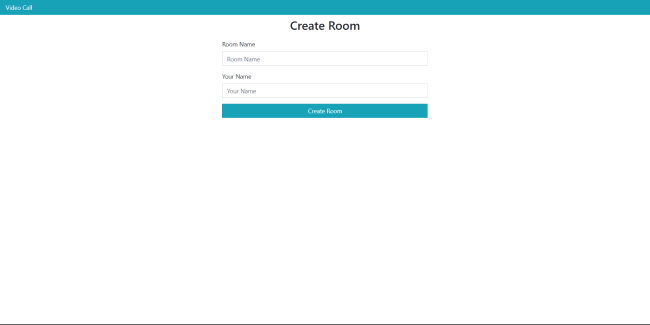
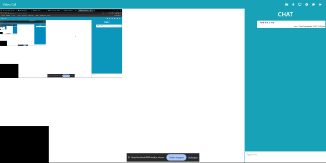
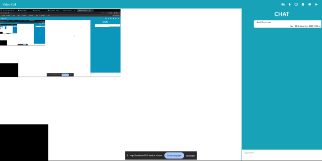
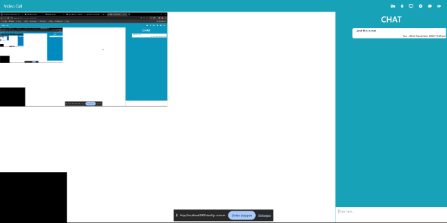

 


Gebruikt WebRTC api, dit zorgt
voor basis code waarop je de
functionaliteiten op kunt gaan
maken en het zorgt ervoor dat
gebruikers elkaar kunnen vinden
en kunnen connecten met elkaar.
De functionaliteiten die in deze
app zitten zijn: bellen, videobellen,
chatten, scherm delen, opnemen en
de opname downloaden wanneer je klaar bent.
Verders zitten bij het (video) bellen
ook de functionaliteiten: microfoon aan/uit,
camera aan/uit en ophangen.
Ik heb dit project samen gemaakt
met een klas genoot aangezien
het een opdrach was voor school.
Ik ben hierdoor beter geworden in
het samenwerken met andere mensen.